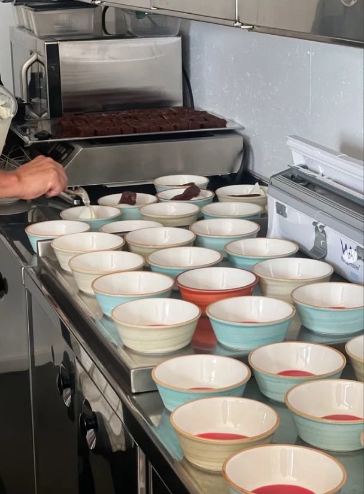
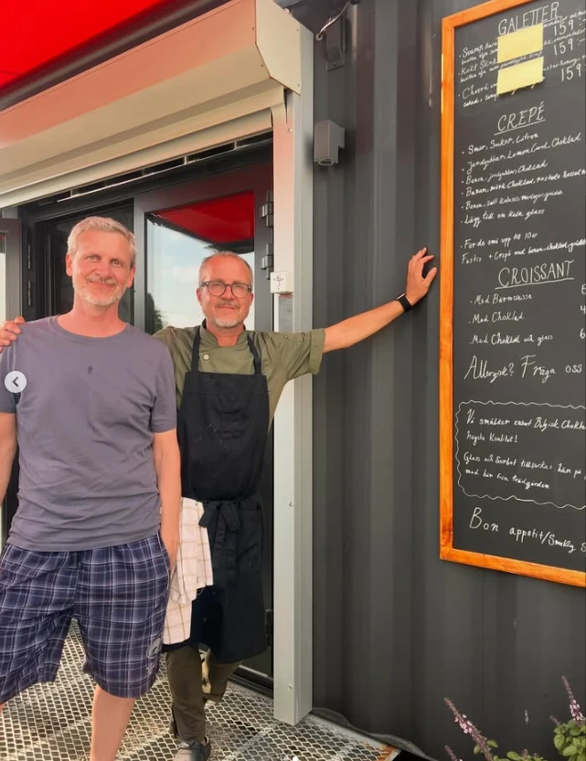
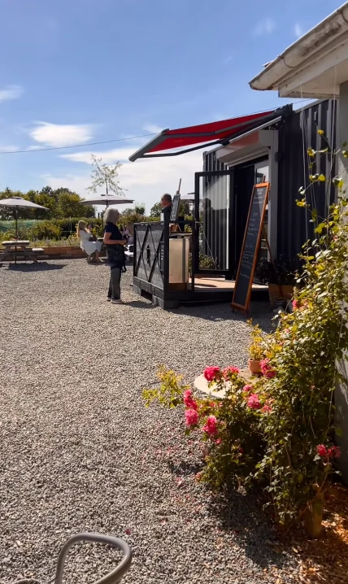
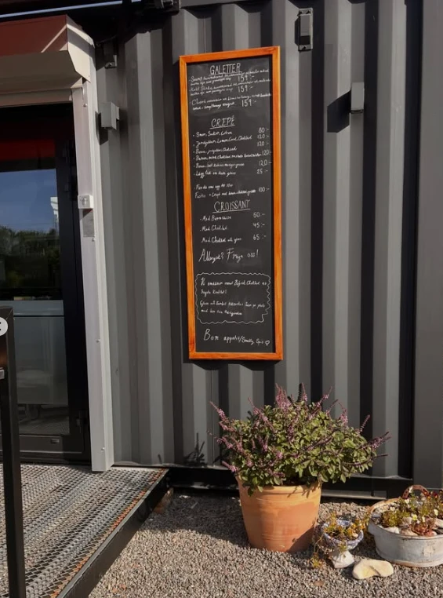
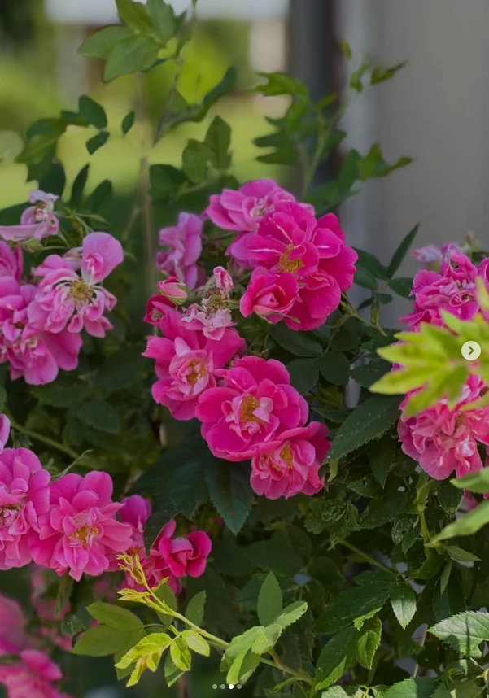
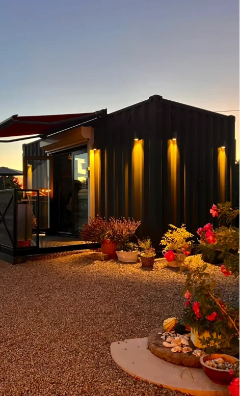

Middagar
Säsongsmenyer för små sällskap i studion. (Platshållartext)

Matstudio · Tolg, Småland
Jonas är kock och driver matstudion på gården i Tolg. Här lagas det med närhet, tålamod och råvaror som hör hemma i trakten.
Boka en kväll
Säsongsmenyer för små sällskap i studion. (Platshållartext)

Crêpes, galetter och croissanter från krittavlan. (Platshållartext)
Laga mat tillsammans, i samspel med Konstladans kurser. (Platshållartext)
Mat till kurshelger, fester och sammankomster. (Platshållartext)




Hör av dig med datum, antal personer och önskemål så återkommer Jonas. (Här kan ett enkelt bokningsformulär eller en kalender ligga.)
Skicka förfråganTillsammans med Emilia Linderholm driver Jonas Konstladan, där konst, kurser och mat möts på gården.
Läs mer om Konstladan →